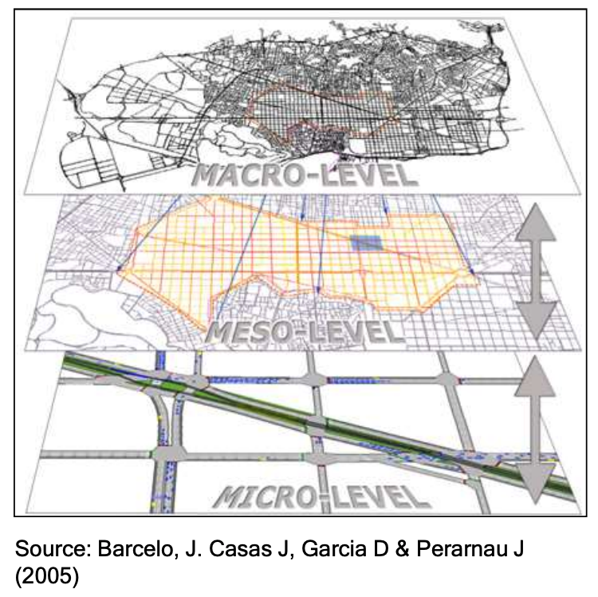
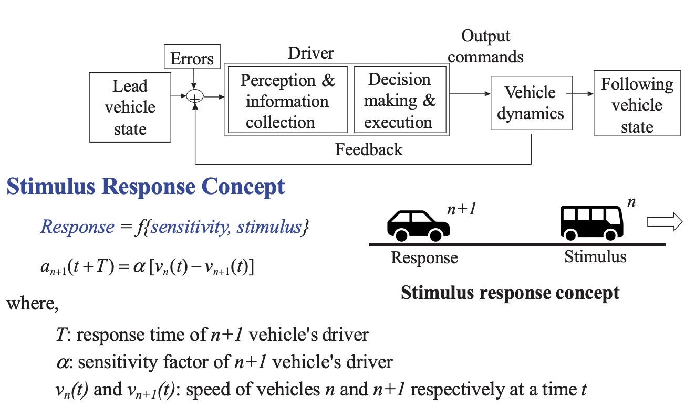

Introduction to Transportation Models
Dr Minh Kieu
Lecturer
Department of Civil and Environment Engineering, University of Auckland
These slides:
https://leminhkieu.github.io/p/Transport-models.html
Classes of traffic models
Microscopic models
Modelling behaviours of individual vehicles in a traffic stream such as car-following and lane changing behaviour.
describe both the system entities and their interactions at a high level of detail.
Potentially to be more accurate than macroscopic models, however this potential might not always be realized due to the complexity of their logic and the larger number of parameters that need to be calibrated.
Components of traffic microsimulation packages

Car-following dynamics
Car-following models
The basic philosophy of car following model is from Newtonian mechanics, where the acceleration may be regarded as the response of a matter to the stimulus it receives in the form of the force it receives from the interaction with other particles in the system.
\[\begin{aligned} Response_n \quad \alpha \quad Stimulus_n \\ \end{aligned} \]different theories on car-following have arisen because of the difference in views regarding the nature of the stimulus. The stimulus may be composed of the speed of the vehicle, relative speeds, distance headway etc, and hence, it is not a single variable, but a function and can be represented as
\[\begin{aligned} {\ddot {x}}_{n }(t)={\dot {v}}_{n }(t) = a_n(t) =F(v_{n }(t),s_{n }(t),v_{{n -1}}(t)) \end{aligned} \]where $F$ is the stimulus function that depends on the speed of the current vehicle, relative position and speed with the front vehicle.
Mesoscopic models
Individual vehicles may be presented but not as details as microscopic models
less computationally expensive to run, but more detailed than macroscopic models
Capable of modelling the traffic on the large scale
Conventional Four-step Transportation Planning Modelling
Dated back to 1950s and 1960s
Four decision models are the basis of the traditional travel demand model:
Trip generation
Trip distribution
Modal split
Traffic assignment.
The ABStreet Game
Windows: https://github.com/a-b-street/abstreet/releases/download/v0.2.39/abstreet_windows_v0_2_39.zip If the game immediately crashes, it might be a graphics card problem.
Mac: https://github.com/a-b-street/abstreet/releases/download/v0.2.39/abstreet_mac_v0_2_39.zip
Unzip the folder, then run play_abstreet.sh or play_abstreet.bat. On Windows, you'll probably get a warning about running software from an unknown publisher.
On your web browser: http://abstreet.s3-website.us-east-2.amazonaws.com/0.2.39/abstreet.html